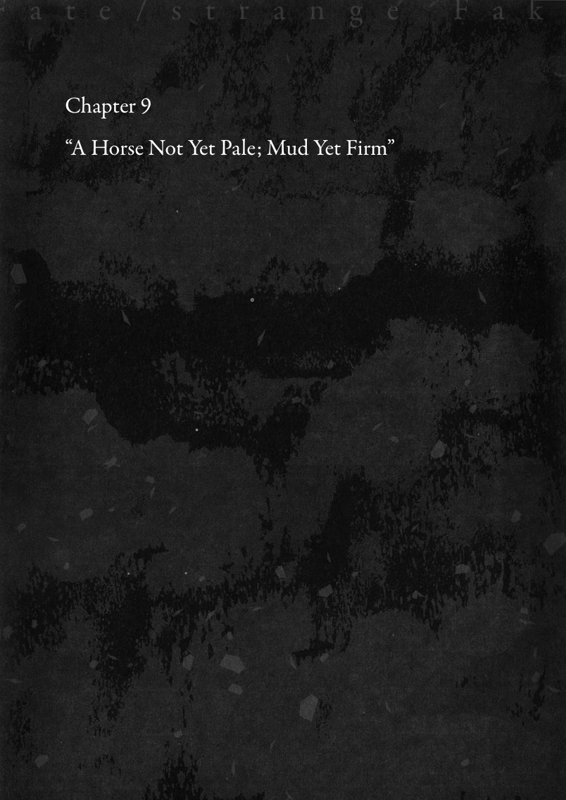
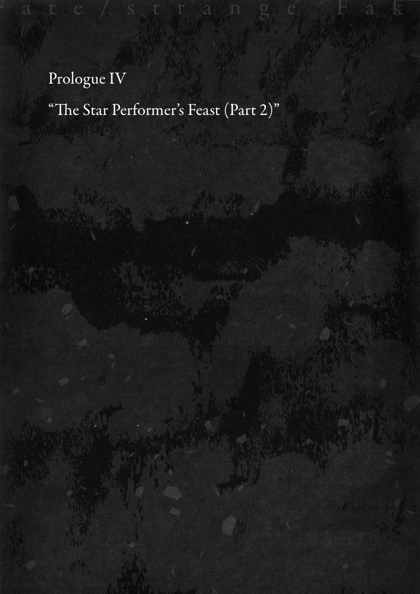

Capítulo 9: Dia 1, Noite
Centenas de milhares de pessoas são dadas como desaparecidas nos Estados Unidos todos os anos.
Se alguém perguntasse se esse número de pessoas realmente desaparece a cada ano, a resposta seria que metade sim, e metade não.
A imprensa japonesa costuma divulgar esse número de forma sensacionalista. Na realidade, porém, a maior parte das pessoas registradas como desaparecidas é encontrada no mesmo dia, ou dentro de alguns dias. As que continuam desaparecidas por mais de um ano — isto é, as que de fato sumiram — representam menos de dez por cento do total. Ainda assim, dezenas de milhares de pessoas por ano.
Dezenas de milhares é um número grande demais para ser ignorado. Mesmo assim, porém, os números dos anos que antecederam a Guerra do Santo Graal eram anormais.
Foi uma mudança lenta, em certo sentido. Ninguém percebeu seu verdadeiro significado.
Ninguém, exceto o homem que a causou.
Havia uma massa de energia mágica distorcida chamada "lama".
Francesca a extraiu do Graal Maior em Fuyuki ao mesmo tempo em que roubou uma porção da "substância" do Graal.
Faldeus, que herdara memórias da terceira Guerra, reconheceu sua natureza.
Antes disso, o Graal havia sido absolutamente límpido, sem a poluição daquele aglomerado senciente de energia mágica.
Guiado por suas memórias, Faldeus imediatamente percebeu sua identidade. E imediatamente propôs que a "lama" fosse colocada em quarentena.
Nenhuma ordem, porém, veio para seu isolamento, descarte ou purificação. Seus superiores e os colaboradores deles tinham interesse naquela imundície — no "mal humano" que havia poluído o Santo Graal e seu poder e que ainda mantinha, setenta anos depois, a capacidade de macular um novo graal. Ou seja, no desejo infinitamente puro e infinitamente estagnado que havia composto um certo Avenger na terceira Guerra do Santo Graal.
Foi o chefe da Família Scladio, Galvarosso Scladio, quem demonstrou o maior interesse pela "lama", que Francesca havia preservado por anos nos vãos entre as vísceras de humanos adaptáveis.
"Bazdilot conseguiria dominar esse atoleiro tóxico", havia dito ele.
Faldeus, naturalmente, se opôs. Mas, como Francesca, que realmente detinha a coisa, aceitara a proposta, a situação começou a se enredar cada vez mais.
Todos os hospedeiros daquela lama haviam sido tomados pela loucura. No fim, ela também consumira seus corpos. Bazdilot, porém, continuou exatamente como era antes de aceitá-la no próprio corpo. Na verdade, aparentemente estava nutrindo a lama com sua própria energia mágica, aumentando seu volume. A Família Scladio elogiou isso como prova do poder de Bazdilot como mago, alegando que ele havia se submetido à própria magia de dominação para controlar a lama sem perder a sanidade. Faldeus sabia que não era bem assim.
Era verdade que Bazdilot estava usando a própria magia para controlar e cultivar aquela lama. E também devia estar sustentando um esforço extraordinário para impedir que ela dominasse sua mente. Ainda assim, Faldeus sabia que havia um único erro nos elogios da Família Scladio.
Bazdilot não estava controlando a lama enquanto preservava a sanidade; o homem chamado Bazdilot já era louco muito antes de se tornar seu hospedeiro — possivelmente desde o princípio.
Distrito industrial de Snowfield. Subterrâneo.
"...Você voltou."
Bazdilot estava no vasto ateliê místico cuja entrada ficava sob a fábrica de processamento de carne. Sentindo uma presença, ele se virou. Seu Servo, Alkeides, estava atrás dele.
"O que você achou do rumoroso Rei dos Heróis?" perguntou, encarando o Archer tornado Avenger.
"...Forte. Não deu sinal algum de cair nas minhas provocações. Às vezes se enfurecia, mas nunca passava de uma demonstração superficial."
"Segundo Francesca, ele é um rei arrogante e dado a acessos violentos... Suponho que as informações dela sejam perigosas de engolir."
Os dois não tinham como saber que a existência do Espírito Heroico Enkidu havia colocado o Rei dos Heróis de bom humor de um jeito sem precedentes. Agora ele estava muito mais tolerante do que normalmente estaria ao ser invocado. Mas, para Bazdilot e Alkeides, a personalidade de Gilgamesh mal importava.
Após uma breve pausa, Alkeides se dirigiu ao seu Mestre.
"Ó Mestre, qual é a fonte da sua energia mágica? Mesmo apenas manter essa 'lama sacrificial' já estaria além de qualquer mago comum."
"Você está preocupado que minha energia mágica vá se esgotar?"
"Você deve conhecer a quantidade e a natureza dos meus Fantasmas Nobres."
"..."
Numa batalha entre Servos, o quão livremente cada um podia empregar seus Fantasmas Nobres muitas vezes era um fator decisivo.
Um vínculo místico agora ligava Alkeides ao seu Mestre, mas ele ainda era incapaz de compreender o limite dos recursos de Bazdilot. Para ser exato, ele conseguia sentir mais ou menos a capacidade total dos Circuitos Mágicos de seu Mestre, mas o volume de energia mágica fluindo pelo elo entre eles excedia isso com clareza.
"É simples; estou apenas usando 'baterias'." Bazdilot enfiou a mão no bolso enquanto falava. Quando a retirou, segurava um objeto do tamanho de uma bola de beisebol.
À primeira vista, Alkeides não percebeu o que era. Quando percebeu, porém, soltou um breve ronco de admiração.
Aquilo que Bazdilot segurava era um cristal envolto por um ar de mistério. Embora transparente, refratava a luz em padrões complexos. Lembrava os cristais místicos usados por magos de joias, mas parecia várias ordens de grandeza mais puro.
Alkeides já havia visto cristais distintivos assim antes. Tinham a mesma aura dos "Cristais de Mana" que as bruxas da Grécia outrora refinavam da Mana no próprio ar. Se esse fosse o caso, significaria que Bazdilot estava extraindo quantidades imensas de energia mágica desse cristal.
Um Cristal de Mana armazenado funcionava como uma bateria de energia mágica, mas não servia para ampliar ou repor imediatamente o Od de um mago ou Servo. Seu uso principal era acrescentar energia mágica externa ao lançar um feitiço.
Bazdilot, porém, estava usando um truque; ao usar a "lama" para poluir essa energia, conseguia absorvê-la para dentro de si e então canalizá-la para o Servo. Usando tal método, a corrupção daquela energia mágica deformada — que, com justiça, poderia ser chamada do próprio sofrimento — normalmente teria se espalhado para seu cérebro e o enlouquecido. Bazdilot estava lançando sua magia de "dominação" sobre si mesmo para manipulá-la enquanto conservava a lucidez.
Alkeides não tinha aptidão alguma para a magia, mas havia adquirido um conhecimento razoável dela por meio de suas viagens no Argo e de outras aventuras. Ele compreendeu rapidamente o processo de Bazdilot. Ainda assim, havia dois pontos que não conseguia explicar.
Não seria impossível produzir Cristais de Mana com as técnicas dos magos modernos?
E um cristal do tamanho daquele que seu Mestre agora segurava não se esgotaria relativamente rápido?
Como se respondesse às dúvidas de seu Servo, Bazdilot se levantou da cadeira.
"...Não há necessidade de você se preocupar com energia."
Os dois seguiram por um corredor do ateliê subterrâneo e chegaram a um espaço aberto colossal. Era muito maior do que a sala em que Alkeides fora invocado; quase como se a fábrica acima tivesse afundado inteira debaixo da terra.
Ali, Alkeides viu aquilo.
Máquinas estranhas ligadas a fileiras de tanques cilíndricos de água. O centro do espaço era ocupado por um dispositivo que lembrava um círculo de invocação composto de tecnologia mecânica moderna. Num canto mais afastado da sala, uma pequena montanha cintilava com brilho suficiente para ser confundida com o tesouro de um castelo. Massas de cristal transparente estavam empilhadas como uma montanha de joias.
"Aquilo é só uma fração."
Os subordinados de Bazdilot começaram algum tipo de operação. As massas com formato humano nos tanques se transformaram em espuma e desapareceram. Em troca, um Cristal de Mana do tamanho de uma bola de beisebol se materializou sobre o aparelho central.
"...Sacrifícios."
Alkeides entendeu tudo.
"Um homem chamado Atrum Galliasta desenvolveu esse sistema", explicou Bazdilot com total naturalidade. "A Família Scladio o roubou e o aprimorou. Atrum era um gênio para desenvolver esse tipo de coisa, mas sua habilidade como mago era insuficiente. Ouvi dizer que morreu sem lutar na Guerra de Fuyuki antes de ter a chance de aumentar sua eficiência."
"Entendo. Então você obtém a energia mágica que canaliza para mim sacrificando vidas humanas."
"A Família Scladio não sofre por falta de inimigos. Se você considera o sacrifício humano imperdoável, pode muito bem torcer meu pescoço aqui mesmo."
Os olhos de Bazdilot lembravam menos a Morte com foice do que a própria morte. Alkeides balançou rapidamente a cabeça.
"É um mero detalhe perto da minha vingança contra os tiranos olímpicos. Nem mesmo se a vida oferecida em sacrifício fosse a minha."
Então, com todo o corpo exsudando aquela energia castanho-avermelhada, ele deu voz ao seu ressentimento contra os deuses.
"Eles nem sequer sacrificaram as almas dos meus filhos... lançaram suas vidas à fornalha por inveja vulgar."
A delegacia.
"Sabe, chefe, aquele Archer que foi atrás do hotel me preocupa mais do que o Saber."
"...Como sempre, seus ouvidos são afiados."
"'Avenger', era? Parece que a senhorita Francesca andava carregando um negocinho bem perigoso."
"Seja como for, ouvi dizer que o Servo em si foi eliminado rapidamente na Terceira Guerra de Fuyuki. Suponho que nenhuma quantidade de ódio e raiva humanos seja páreo para Espíritos Heroicos de primeira linha."
O chefe e seus homens não lutavam apenas movidos por convicção delirante e ódio. Ainda assim, ele não negava que havia poder na raiva, no ódio e em outras emoções negativas. Se isso viesse a se mostrar ineficaz, ele precisaria reconsiderar seus próximos movimentos.
"Ha!" respondeu Dumas, rindo. "Você não está dando crédito suficiente à vingança, chefe. Ódio, levado ao extremo, é uma forma de maldição por si só. Dá até para chamar isso de um tipo de Mistério que ainda existe nos tempos modernos e nem precisa de magia. Claro, no fundo não é Mistério nenhum; é só emoção humana."
"Maldição, é?"
"É. O perigoso é que, quanto mais justa a vingança, e quanto mais longe você a leva, melhor ela parece. Se o ódio é uma maldição, a catarse é ópio. Uma provadinha e você fica viciado. Não importa se é um vingador, ou um observador lendo sobre um num livro ou vendo um em cena, ou um autor lucrando ao transformar a vingança dos outros em livro. Ha ha!"
O chefe considerou as palavras de Dumas por um momento, então franziu o rosto e perguntou: "...Parece impossível, mas houve um modelo real para o seu Conde de Monte Cristo?"
"Quem sabe? Um dos modelos provavelmente foi o meu velho. Mas Edmond Dantes existiu? Ele realmente levou adiante uma vingança que empolgou todo mundo que a viu? Desistiu dela no fim? O tesouro existiu de verdade? Só Deus sabe. É uma daquelas coisas meio 'Rashomon'. Bem, o que é definitivamente verdade é que eu enchi os bolsos com o romance! Ha ha ha ha ha!"
"...Se, por hipótese, houve um homem real em quem você o baseou, e esse homem encontrasse você agora, você não teria direito algum de reclamar se ele lhe desse um tiro na cara."
"Acho que não", concordou Dumas com o sarcasmo do chefe, rindo o tempo todo.
"Enquanto eu for um Servo, talvez esbarre com ele algum dia, mas eu atravesso essa ponte quando chegar nela. Vou dizer: 'Graças a você, eu ganhei muito mais do que os canalhas que enganaram você'! Ha ha!"
"Se eu estivesse no lugar dele, ainda estaria esperando uma chance de lhe encher a cara. Qual era aquela frase mesmo? Ah, sim, era—"
"Ei, para com isso!" gritou Dumas, apressado. "Não cite para um autor a obra dele mesmo! Eu não vou conseguir evitar pensar numa frase melhor e, depois, vou querer reescrevê-la! E não posso mais!"
Algum tempo depois, quando se acalmou, Dumas retomou sua aula sobre a maldição da vingança.
"Enfim, chefe, tome cuidado. Do ponto de vista de um estranho, uma vingança adequada — não um ressentimento injustificado — é um prazer de assistir. A maldição é contagiosa, entendeu? Quanto mais difícil de obter for a vingança, mais forte ela fica.
"Até aquele rei reluzente que você está caçando pode acabar engolido pela vingança de algum caipira qualquer."
Hotel Crystal Hill. Último andar.
"Humph. Ele parece estar de ótimo humor; a floresta está assumindo um aspecto completamente diferente daquele que tinha de dia."
As janelas da suíte estavam destruídas por toda parte. Tiné bloqueava os ventos fortes daquela grande altura com uma barreira mística. Também havia erguido várias outras barreiras adaptadas para enganar os olhos de quaisquer observadores do lado de fora.
Apesar do ataque recente, Gilgamesh declarara que "rei nenhum permitiria que uma ou duas flechas o desalojassem de sua altura", então haviam voltado para o hotel. Os seguidores de Tiné estavam no processo de enfeitiçar operários da construção civil e afins.
E o próprio herói, ignorando as dificuldades ao redor, observava a grande floresta que margeava a cidade. Aquilo parecia melhorar seu humor.
"Parece que meu amigo também encontrou um bom oponente para se aquecer! Estou ansioso por isso!"
O Rei dos Heróis olhava para a cidade de braços cruzados. A expectativa pelas batalhas que viriam devia tê-lo excitado, porque ele dirigiu a Tiné as seguintes palavras, incomuns para ele:
"Tiné, prepare um amplo suprimento de energia mágica. Não sacarei Ea contra ralé vira-lata, mas até eu não consigo imaginar quanta força vai exigir o que pretendo fazer agora."
O Rei dos Heróis falava com os olhos cheios de um vigor juvenil. Tiné ficou momentaneamente surpresa, mas logo se recompôs e assentiu com firmeza.
"Por favor, use seu poder como achar melhor. Ainda que meu corpo e minha alma definhem e—" começou Tiné, mas Gilgamesh a interrompeu em tom severo.
"Chega de tolices. Você é livre para me oferecer sua vida, a mim, seu rei, mas uma alma imatura como a sua não me traria conforto algum."
"..."
"Além disso, se você definhar e morrer cedo demais, como eu poderei me divertir plenamente com meu amigo? Ou pretende me impor o trabalho de procurar um novo vassalo com energia mágica comparável à sua?"
"E-eu não quis dizer...!" apressou-se Tiné a negar a acusação. O Rei dos Heróis lhe lançou um sorriso enviesado.
"Se deseja me oferecer sua vida, talvez sua alma seja digna disso quando esta guerra terminar — no momento em que eu cumprir meu compromisso com meu amigo. Faça isso, e eu levarei de volta comigo ao Trono uma lembrança sua — a lembrança de que, nesta guerra, houve uma que mereceu o título de vassala leal. Considere isso uma honra equivalente a tornar-se cidadã de Uruk."
"E-eu vou dar o meu melhor! Ah..."
Percebendo que havia erguido a voz inconscientemente, Tiné tratou de moderar o tom.
"Minhas humildes desculpas. Do jeito que estou agora, aquela cavaleira se recusou até mesmo a me reconhecer como inimiga..."
Gilgamesh pareceu confuso com o tom autoflagelante de Tiné.
"Se o desprezo da cavaleira a afeta, isso é soberba", anunciou o Rei dos Heróis com um sorriso destemido. Ele devia ter adivinhado o desconforto de Tiné. "Por maior que seja sua determinação, diante dos fortes uma criança é apenas uma criança. Naturalmente, aos meus olhos você também não passa de uma criança."
"Mas eu—"
"Eles tratariam um guerreiro orgulhoso com cortesia, independentemente da idade aparente. Mas, embora você tenha determinação, Tiné, ainda não pode se dizer orgulhosa. Qualquer um consegue se enrijecer diante de uma morte certa. Quem não tem autorrespeito, porém, continuará sem tê-lo mesmo na velhice."
"..."
Tiné não tinha certeza de que algum dia seria capaz de possuir tamanho orgulho. Ignorando sua ansiedade, o Rei dos Heróis tirou da adega da suíte uma garrafa de alto padrão e, com descaramento, continuou enquanto puxava a rolha.
"Nesse sentido, você é afortunada; é minha vassala, ainda que temporariamente. Em poucos dias poderá se gabar de que teve o privilégio de servir ao maior e único rei e de gravar minha glória em sua memória. Mas, então, sendo rei, eu não poderia conhecer os sentimentos de um guerreiro orgulhoso."
Os sentimentos de Tiné diante daquela proclamação de egoísmo obstinado de seu rei haviam ido além da exasperação. Ela não o compreendia por completo, mas estava impressionada com o fato de ele aparentemente acreditar de verdade que o mundo lhe pertencia. Ela não percebia que seus sentidos iam se anestesiando aos poucos.
Lembrando-se de repente de uma questão que a preocupava, decidiu arriscar-se a perguntar ao Rei dos Heróis.
"Com todo o respeito, Vossa Majestade, posso perguntar por qual meio triunfou na quarta Guerra do Santo Graal de Fuyuki, como uma pequena parte de sua glória?"
O Rei dos Heróis sorriu amplamente e tomou um gole de vinho com toda a calma.
"Oh-ho. Você percebe, Tiné, que só eu poderia responder a essa pergunta? Sob este sistema de 'Fuyuki', não se retêm memórias das vezes em que alguém foi invocado em outros lugares."
"Mesmo que elas pertençam ao passado...?"
No Trono, não existe conceito de passado ou futuro. Receber todas as memórias de um Espírito Heroico criaria contradições, como conhecer o resultado de uma Guerra do Santo Graal da qual ele estivesse participando naquele momento. Supostamente, por isso, suas memórias seriam ajustadas para se adequar ao tempo e ao lugar em que fossem invocados.
"Talvez isso seja uma medida desesperada por parte do Trono para conter, ainda que minimamente, as contradições do mundo, mas é um esforço desperdiçado diante dos meus olhos, que veem através de todos os futuros. Inferir o passado com base num futuro de uma fase diferente é uma questão simples."
O Rei dos Heróis encarou o vazio com confiança e tentou observar a si mesmo numa fase diferente, mas...
"Hm? ...'Splash'...? Isso não pode estar certo... Pesca...? Não..."
Ele pareceu brevemente confuso, depois intrigado.
"Que estranho. Assim que volto meu olhar para as fases ao redor do momento em que fui invocado nesse 'Fuyuki', a 'lama' que vi hoje embaça meus olhos."
Pareceu, no entanto, não se importar muito com isso. Depois de um gole de vinho, deu de ombros.
"Bem, não importa. Se este 'Graal' for genuíno, usarei a energia mágica que ele contém para lavar essa 'lama'. Em troca, contarei a você a história completa de como construí os muros de Uruk!"
Tiné acabou aprendendo uma verdadeira montanha de fatos que preferia nunca ter ouvido sobre uma cidade chamada Uruk... mas essa é outra história.
Noite. Hospital Central de Snowfield.
No centro de Snowfield, existe um edifício branco gigantesco. À primeira vista, poderia ser confundido com um museu de arte, mas era o maior e mais bem equipado hospital da cidade, uma fortaleza de esperança em cujas portas inúmeros pacientes batiam em busca de tratamentos que iam de cirurgia a medicina psicossomática... Ou pelo menos deveria ser. Naquele momento, a recepção estava em caos diante das ondas de pacientes que não paravam de chegar, escoltados por suas famílias.
"Estou dizendo, tem alguma coisa errada com o meu marido! Num momento ele estava indo para Las Vegas a trabalho, e no seguinte voltou falando que 'nunca mais vai sair desta cidade'! Isso não é normal!"
"É uma loucura! Um dos nossos caras foi até Indian Springs fazer uma entrega, mas voltou direto sem nem fazer o serviço. Aí mandamos outro, e ele fez exatamente a mesma coisa!"
O único traço em comum em todos os casos era que toda pessoa que tentava deixar a cidade retornava de repente. Suas famílias as traziam ao hospital, temendo algum tipo de doença mental. Diante da enorme enxurrada de pacientes semelhantes, o hospital suspeitou que algo sem precedentes estivesse acontecendo. Naquele momento, eles realizavam uma reunião de emergência para elaborar contramedidas.
"Oh, doutor. Aconteceu alguma coisa?" chamou uma jovem enfermeira um médico idoso que já havia terminado seu turno. Os dois andavam por uma ala interna do hospital, ligeiramente afastada do caos.
"Não; apenas esqueci alguma coisa no quarto de um paciente."
"Ah, entendo. Ouvi dizer que a entrada principal está um caos agora, então tome cuidado."
"Tomarei, obrigado."
O velho doutor esperou até ter certeza de que a mulher havia ido embora. No instante seguinte, sua forma havia mudado para a da própria enfermeira com quem acabara de falar.
"Como vai indo, Jack?"
O cérebro da enfermeira — isto é, do Berserker disfarçado — captou uma comunicação telepática de seu Mestre, Flat.
"Nenhum problema por aqui. Obtive um crachá de acesso para prosseguir mais fundo, então pode ficar tranquilo."
Berserker havia se transformado completamente na enfermeira, inclusive no crachá em estilo código de barras pendurado em seu pescoço. Ele seguiu mais fundo pelo hospital, assumindo as formas das pessoas que cruzava nos corredores e reunindo informações enquanto avançava.
"É para esse lado?" perguntou, já de volta à forma do velho médico original. "Você consegue mesmo ver o que eu vejo?"
"Sim, mais ou menos. Deixa eu ver... A 'névoa' está mais densa escada acima."
"Entendido. Vou prosseguir com cautela", assentiu Jack com firmeza.
"Só toma cuidado quando se transformar várias vezes, tá?" acrescentou Flat, como se tivesse acabado de se lembrar de algo. "Se você acabar parecendo que vai pegar um resfriado, como antes, acho que não vai conseguir evitar chamar atenção."
"D-de fato... Eu apenas tentei me transformar numa garota comum; não consigo imaginar por que acabei vestido daquele jeito, com as coxas e a barriga à mostra..."
Antes de se infiltrar no hospital, Jack havia praticado se transformar em várias formas no quarto do motel para descobrir qual teria a aparência menos suspeita possível. Quando tentou se transformar numa menina de dez anos, porém, de alguma forma acabou vestindo uma roupa preta reveladora que lembrava um maiô. Como resultado, Flat correu de um lado para o outro em pânico, gritando que, se alguém os visse, chamaria imediatamente a polícia e a vida dele estaria acabada, e cobriu Jack com um cobertor. No fim ele se acalmou, mas a causa continuou desconhecida.
"Bem, pelo menos eu pude ver você perder a compostura pela primeira vez, então considero isso um sucesso."
"Por favor, não faça isso de novo. Estou falando sério."
Berserker soltou um suspiro telepático e então se preparou, levantando o olhar para a escada.
Ainda não consigo ver nada. Mesmo assim, se o meu Mestre diz que está lá, suponho que deva estar.
Berserker estava se infiltrando no hospital para localizar a origem da "névoa" que cobria a cidade.
No motel, Flat alegara que conseguia ver algo como uma neblina de mana cobrindo a cidade inteira. Mesmo ao se transformar num mago, Berserker não havia conseguido perceber nada fora do comum. Ainda assim, Flat aparentemente conseguia ver aquelas correntes alienígenas.
"Isto não é Mana comum", declarara ele com uma seriedade incomum. "Como eu descrevo...? É como se cada gota de garoa fosse um ser vivo independente... Ou como se a cidade estivesse coberta por um enxame de gafanhotos superminúsculos...
"No nível em que está agora, instrumentos para medir energia mágica não registrariam nada. Mas, se a 'névoa' ficar uns dois graus mais densa, acho que magos de sentidos apurados vão começar a notar. Mesmo agora, um Espírito Heroico muito perceptivo ou algo que perceba as coisas de forma diferente dos humanos — como um hematófago — provavelmente conseguiria senti-la."
Flat então enviara um familiar e observara a cidade compartilhando seus sentidos. Como resultado, descobrira que a névoa ao redor do Hospital Central de Snowfield estava um pouco mais densa do que em qualquer outro lugar.
Jack sugerira se esgueirar para dentro em forma espiritual. Enquanto estivesse intangível, porém, ficaria completamente indefeso contra ataques mágicos e correria o risco de sofrer dano letal caso encontrasse algum tipo de armadilha. Por isso, decidiram que Jack usaria sua própria peculiaridade para se transformar em alguém ligado ao hospital e se infiltrar enquanto materializado.
"Quando a coisa apertar, não hesita em fugir. Quando a situação ficar crítica... tipo, muito crítica mesmo, eu uso um Selo de Comando para puxar você para fora!"
Flat soava decidido.
"...Mestre", perguntou Berserker, "você acabou de pensar que gostaria que eu escapasse sozinho, se possível, porque não quer perder um Selo de Comando com aparência tão 'legal', não foi?"
"Foi, sim. Desculpa!"
"Honestidade é uma virtude, mas há ocasiões em que uma mentira piedosa seria preferível."
Enquanto o exasperado Berserker continuava a avançar com cautela, seus olhos recaíram sobre as palavras "Ala de Isolamento Especial". Aparentemente era uma instalação para colocar em quarentena pacientes com doenças infecciosas incomuns. Entrar ou sair dali exigia passar por uma sala de descontaminação.
...O que isso pode significar? Talvez algum dos médicos daqui seja um Mestre, e esteja usando este lugar para manter seu Servo isolado?
As reflexões de Jack foram interrompidas pelo som de alguém saindo da sala de descontaminação. Ele rapidamente assumiu a forma da enfermeira que tinha visto deixar essa ala.
Um momento depois, uma médica saiu para o corredor.
"Oh, você ainda não foi para casa?"
"Desculpe; eu esqueci uma coisa e..."
"Entendo. Fico pensando se o pessoal da psicossomática ainda está atolado. Uma coisa aconteceu atrás da outra — a explosão do oleoduto no deserto, o ataque terrorista à delegacia, o tornado desta tarde e por aí vai — e tenho certeza de que muita gente deve estar em choque..."
A doutora, que aparentemente estava tentando analisar a situação de forma racional, balançou a cabeça em autodepreciação antes de continuar.
"Minha irmã caçula trabalha naquela delegacia, então eu estava fora de mim até receber notícias dela esta manhã... Ainda assim, nem tudo é ruim. A pequena Tsubaki está muito estável hoje. Se continuar assim, talvez até recupere a consciência um dia desses."
"Sério? Isso é ótimo!"
Berserker fez o melhor que pôde para acompanhar a conversa. Não conseguia copiar memórias instantaneamente.
"Sim. Quando encontramos aquela tatuagem esquisita na mão dela pela primeira vez, achei que fosse a ideia de humor de alguém... mas agora me pergunto se os lendários 'Protetores da Terra' não lhe deram um amuleto da sorte."
"É mesmo...?"
"Ah, desculpe. Aqui estou eu, uma médica, falando desse tipo de bobagem..."
A doutora riu para disfarçar o desconforto e então foi embora. Depois de vê-la descer as escadas, Berserker entrou na sala de descontaminação. E então...
"...Conseguiu ouvir isso, Mestre?"
Mesmo por telepatia, a voz de Berserker era feminina para combinar com sua aparência.
"Sim", respondeu Flat, "e agora eu consigo ver."
"Então está decidido... Tenho quase certeza de que esta Mestre chamada 'Tsubaki' e seu Servo estão além desta porta."
"Sim... mas acho melhor você voltar por enquanto. Se isso fosse um videogame, definitivamente ele estaria perguntando agora se você quer salvar."
"Concordo. Peço desculpas, mas não tenho vontade alguma de prosseguir mais adiante sem fazer preparativos."
Desta vez, não eram só os sentidos de Flat. Transformar-se numa pessoa comum havia reduzido significativamente as capacidades de Berserker como Espírito Heroico, mas ele também conseguia sentir aquilo. Uma aura densa e agourenta girava ao redor da porta que levava da sala de descontaminação ao quarto do paciente.
"Se aquilo que se espalhou pelos corredores através da sala de descontaminação é uma névoa negra de energia mágica... então o que eu consigo ver na entrada desse quarto é parte de uma cachoeira gigantesca."
Berserker não conseguia enxergar com tanta clareza. Ainda assim, embora sua verdadeira identidade fosse desconhecida, ele havia se manifestado como um "assassino", e todos os seus instintos de assassino soavam o alarme. Eles o advertiam de que o quarto estava preenchido pelo mesmo ar que devia tê-lo cercado nos nevoeiros de Londres. Advertiam-no de que, adiante, estava a própria Morte.
"Eu provavelmente consigo dar conta se usar meu Fantasma Nobre... mas não posso dizer com certeza. Usar bombas para destruir o hospital inteiro talvez fosse uma opção melhor—"
"N-não podemos fazer isso! Nem sabemos se essa Mestre é amiga, inimiga ou um monstro!" Se ele consegue dizer isso numa Guerra do Santo Graal, então realmente lhe falta alguma coisa de que um mago precisa... Ou talvez seja melhor dizer que ele tem alguma coisa de que um mago precisa carecer.
Bem, provavelmente é justamente essa atitude que o colocou junto daquele maravilhoso "professor" dele.
Berserker suspirou e girou nos calcanhares.
"Entendido."
Fez questão de memorizar as letras da placa ao lado da entrada: "TSUBAKI KURUOKA".
"Se eu fizesse isso, deixaria de ser um 'assassino'. Eu seria... outra coisa."
Dentro do quarto de Kuruoka Tsubaki.
"Parece que... alguém — não, alguma coisa — estava do lado de fora há pouco", murmurou Jester Karture, ainda na forma de um garoto, como se estivesse falando com a menina deitada diante dele.
"Ainda assim, quando segui a doença que vem corroendo as pessoas até sua origem, nunca esperei que a Mestre fosse uma garota à beira da morte", murmurou o menino para si mesmo enquanto fitava os Selos de Comando na mão de Kuruoka Tsubaki. Ele devia ter conseguido entrar no quarto de algum modo, depois de ocultar o rosto e os poderes vampíricos.
"Sim, ainda é cedo demais. Só mais um pouco... Até a maldição do Servo que possui essa garota amadurecer..."
Jester prosseguiu com seus murmúrios sinistros exibindo um sorriso extático.
"Ah, fico me perguntando o que a minha adorável senhorita Assassin fará quando descobrir esta criança. Quando souber que essa garota pode matar inocentes da cidade só por estar viva... Ha ha.
"Se eu usar essa garota direito... talvez eu consiga ver a senhorita Assassin chorar!"
Igreja Central de Snowfield.
Caramba, que vacilo. Não acredito que deixamos aquele demônio escapar.
Hanza Cervantes, supervisor da Guerra do Santo Graal, estava em um quarto que havia alugado na ala residencial da igreja central. Estendeu a mão para uma taça de vinho transbordando jalapeños e jolokias e, depois de agradecer ao Senhor, começou a petiscar.
Seus subordinados, o "Quarteto", estavam naquele momento perseguindo o vampiro. O próprio Hanza se preparava para partir assim que a criatura fosse encontrada e, enquanto isso, esperava por ligações de Mestres em busca de explicações do supervisor. A primeira espera já estava chegando ao fim, porém, e não havia relatórios nem Mestres.
A segunda, claro, não o surpreendia nem um pouco. Aquilo havia sido anunciado como uma Guerra do Santo Graal sem a Igreja Sagrada; era duvidoso que algum dos Mestres o procurasse.
Ainda estou esperando que os perdedores peçam asilo, mas ou ninguém foi eliminado ainda, ou morreram Mestre e Servo juntos...
O que será que eu digo para tirar sarro daquele chefe de polícia se ele aparecer querendo proteção para a turma toda?
Hanza deu de ombros. Na TV, começou a passar um documentário sobre "o contínuo aumento dos casos de pessoas desaparecidas nos Estados Unidos".
"...Ao longo dos últimos anos, houve um aumento constante no número de pessoas registradas como desaparecidas e que continuam desaparecidas por mais de um ano. Se observarmos este gráfico, podemos ver que este ano mantém a gradual alta..."
Diante dos números de desaparecidos exibidos de forma tão neutra na tela da TV, Hanza franziu levemente o cenho.
Outro aumento. Quantas dessas pessoas caíram vítimas de vampiros e outras monstruosidades...?
Sem expressão alguma no rosto, Hanza estendeu a mão, pegou outra pimenta ardida e a trincou com força entre os molares, que haviam sido equipados com uma variedade de ferramentas consagradas.
Ele não fazia ideia de que os vampiros nada tinham a ver com o aumento recente no número de desaparecidos. Nem pessoas fugindo de casa ou escapando para outros países.
Ele não sabia que um mago, repleto de malícia pura, estava por trás de tudo isso.
Distrito industrial. Oficina subterrânea.
Havia uma montanha de Cristais de Mana empilhada num canto da sala. Alkeides conseguia sentir a energia mágica de altíssima densidade comprimida em cada um deles.
"...Com essa quantidade", declarou sem emoção, "eu poderia lutar por meio dia em força total sem dificuldade."
"Isso é meio dia?"
"Está insatisfeito? É verdade que talvez leve mais do que isso para resolver as coisas com aquele rei dourado..."
"Não. Isso bastará."
Enquanto falava, Bazdilot desenrolou um mapa sobre a mesa e o mostrou a Alkeides. Depois de retirar várias camadas de ocultação, vários pontos vermelhos brilhantes apareceram no que antes parecia um mapa comum do distrito industrial.
"Se isso é suficiente para sustentá-lo por meio dia..."
As luzes vermelhas indicavam tanques industriais de óleo combustível, reservatórios de água e enormes reservatórios de gás em forma de cilindros gigantes coroados por semiesferas.
"Se eu somar tudo o que preparei para esta Guerra, você deve conseguir lutar continuamente em força total por vários meses."
Ao ouvir essas palavras, Alkeides entendeu. Os diversos tanques indicados no mapa eram todos falsos, feitos para manter as aparências. Por dentro, eram cofres repletos de Cristais de Mana idênticos aos desta oficina.
"...Para produzir tamanha quantidade... quantos você sacrificou para esta engenhoca?"
A pergunta fora feita em tom sarcástico; ele percebia que devia haver vítimas demais até para contar. Bazdilot, porém, respondeu sem pestanejar.
"Ah, apenas 24.976 pessoas."
"..."
"Isso o choca? É só cerca da metade do número que os cartéis de droga sul-americanos mataram nos últimos anos."
"Não; só me surpreendeu que você guardasse a cifra exata no próprio cérebro."
"Eu lhe pareço tão irresponsável com vidas humanas assim?"
As palavras de Bazdilot eram sinceras, ou ele estava fazendo uma piada de humor negro? Nem mesmo Alkeides conseguiu medir a verdadeira intenção de seu Mestre pelos olhos dele. O homem era como uma máquina de matar.
"Sacrificar tanta gente em total segredo não é tarefa trivial."
"Não foi nada demais. Não é como se eu tivesse conseguido sequestrar sozinho várias dezenas de pessoas por dia, dentro e fora do país. Foram as conexões do meu mestre, Galvarosso Scladio, que tornaram tudo possível."
Bazdilot soltou uma breve expiração e depois continuou, impassível.
"Quanto mais a Família Scladio cresce, mais inimigos ela faz. Se já vão eliminar os inimigos de qualquer maneira, então essas vidas devem servir a um propósito prático."
Então Bazdilot estreitou os olhos e cuspiu algo que poderia ser tomado por autocrítica.
"Embora, dos trinta e seis de hoje, eu só tenha conseguido extrair restos... Isso porque eu os matei primeiro."
Centro Correcional Especial Colesman. Na oficina de Faldeus.
Em seu aposento, cercado por marionetes, Faldeus pensava.
Bazdilot é perigoso.
Não, isso não está totalmente certo. O verdadeiro perigo é a Família Scladio.
Se Bazdilot vencer esta Guerra, a Scladio se tornará imparável. Quando a combinação da "lama" com os cristais se espalhar para os outros magos da Família Scladio, eles se tornarão ainda mais poderosos do que já são. Se isso acontecer, serão uma contenção para a Torre do Relógio e para a Igreja Sagrada... mas o controle governamental deixará de ser possível.
Depois de rever suas várias preocupações, Faldeus tomou uma decisão.
Vou providenciar para que Bazdilot desapareça durante esta Guerra do Santo Graal. Mas só isso não bastará.
"Não há mais ninguém aqui", murmurou. "Eu gostaria de falar diretamente. Você concorda com isso, Assassin?"
Todas as luzes do cômodo se apagaram. A escuridão passou a reinar ao redor dele.
Era uma escuridão de qualidade diferente da comum. Faldeus sentiu uma pressão como se as sombras à sua volta fossem coisas vivas, rastejantes. Um arrepio percorreu sua espinha.
Antes que tivesse chance de ativar um feitiço de visão noturna, uma voz o chamou por trás.
"...Dize aquilo que te aflige."
O modo de falar de Assassin era indireto. Faldeus suou frio e cerrou os punhos.
"Isso significaria sair desta cidade, mas... existe uma pessoa de quem eu quero que você cuide de forma que pareça um acidente ou morte natural. Um homem que está sempre protegido por vários magos, e que não podemos assassinar pelos meios normais de que dispomos. O nome dele é—"
Quando Faldeus estava prestes a dizer o nome do alvo, a pressão da escuridão aumentou.
"Se pisares nesse caminho, talvez não possas voltar."
"..."
"Tens uma fé digna de pôr fim a uma vida humana?" O Servo pedia ao Mestre uma confirmação final.
"Saibas que, se tua fé algum dia se provar falsa, a maldição recairá sobre ti e te devorará por inteiro. Se estás preparado... dize o nome da tua calamidade."
Faldeus sentiu que não só as partes místicas de si mesmo — seus Circuitos Mágicos, seu Brasão, seus Selos de Comando — mas até seu coração e seus vasos sanguíneos haviam congelado por completo. Ainda assim, ele disse o nome.
"Galvarosso Scladio."
"..."
"O primeiro homem que você vai matar não é um mago nem um Espírito Heroico; é um humano comum. Se ele não tivesse sua proteção mística, eu mesmo poderia matá-lo com facilidade."
Ao mesmo tempo. A Torre do Relógio.
Num escritório da Torre do Relógio, Lord El-Melloi II estava preocupado. Em circunstâncias normais, ele já estaria se preparando para partir imediatamente para Snowfield e, no mínimo, trazer de volta consigo seu aluno desgarrado. Uma interrupção inesperada, porém, o detivera em pleno movimento.
Adashino, do Departamento de Administração da Justiça, havia lhe entregue pessoalmente uma "solicitação por escrito". Ela dizia: "Levando em consideração as circunstâncias ligadas à perda de Kayneth El-Melloi Archibald, importante membro do corpo da Torre do Relógio, os Lords estão proibidos de viajar para Snowfield, que foi designada zona de perigo especial." Chamasse Adashino isso do que chamasse, estava claro que se tratava de uma ordem.
Lord El-Melloi II fora obrigado a parar bruscamente no meio dos preparativos dos Artefatos Místicos para sua expedição. Ele até já esperava algo assim e não conseguia reunir grande raiva.
"Ainda assim, a reação da Administração da Justiça foi rápida demais."
O Departamento de Administração da Justiça havia usado todas as suas conexões para garantir que El-Melloi II não pudesse viajar até o local da Guerra do Santo Graal. Presumivelmente, estavam preocupados com a possibilidade de ele optar por ignorar a "solicitação".
Ele já havia confirmado a presença de vários vigias do lado de fora, e não possuía habilidade para forçar passagem através deles.
No pior cenário, devo considerar a possibilidade de que os mentores por trás de Snowfield tenham ligações com a Administração da Justiça na Torre do Relógio...
Não, se fosse esse o caso, a Administração da Justiça teria tentado me pressionar a ir para lá de antemão. Teriam querido que eu analisasse a Guerra do Santo Graal.
Uma batida na porta interrompeu seu solilóquio mental. Ele a abriu, e Rohngall, o marionetista, entrou acompanhado do mesmo discípulo do dia anterior.
"Com licença. Vossa Senhoria está se sentindo melhor hoje?"
"Sim. Lamento que tenha precisado ver aquilo. Mas parece que vocês vieram com urgência. Têm mais alguma informação nova?"
"Sim, de fato... Na verdade, foi este meu pupilo quem descobriu... Já começou a circular como rumor entre os moradores mais jovens da Torre do Relógio, e provavelmente estará mais amplamente conhecido amanhã, mas achei melhor contar primeiro a Vossa Senhoria."
El-Melloi II inclinou a cabeça, intrigado. O jovem discípulo lhe entregou timidamente um notebook. Ao abri-lo, a tela exibia a página de um site que justificadamente poderia ser chamado de o mais popular serviço de compartilhamento de vídeos do mundo. (Ele havia sido adquirido alguns anos antes pelos operadores de um grande mecanismo de busca.)
"Hum, eu tentei procurar discretamente em sites de notícias locais e coisas assim, caso houvesse mais alguma informação sobre o que aconteceu ontem. Então encontrei essa banda de rock chamada 'Snow Smoke', que toca em Snowfield. Eles enviaram aquele vídeo."
Será que alguém gravou aquela prisão de outro ângulo...?
El-Melloi II franziu o cenho diante da tela. Um momento depois, um pequeno grunhido de surpresa escapou de sua garganta.
Na tela havia a imagem do mesmo Espírito Heroico que supostamente deveria ter sido preso, dedilhando uma guitarra com habilidade numa jam session com os membros da banda.
"U-um Espírito Heroico... transmitiu um vídeo...?"
"Bem, foi a banda que fez o upload, então ele não o distribuiu pessoalmente..."
"Mais importante, o que esse Espírito Heroico está fazendo? Que tipo de plano poderia levá-lo a agir assim...?"
El-Melloi II tentou analisar as ações do Espírito Heroico à sua maneira, o tempo todo pensando que o homem tocava guitarra estranhamente bem. Seus pensamentos, porém, foram interrompidos pelo aprendiz de Rohngall apontando para a tela.
"Ah! Ali! Olha, no canto da tela!"
"Hm...?"
El-Melloi II olhou e viu uma garota de óculos marcantes e cabelo loiro descolorido. Seu cenho se fechou ainda mais quando uma única palavra escapou de seus lábios.
"...Sajou?"
Na floresta.
"Ei", chamou Ayaka a Saber enquanto avançavam pela mata.
"Hm? O que foi?"
"...Desculpa. Pelo que aconteceu antes."
"Você fez alguma coisa pela qual precise se desculpar?"
Saber pareceu genuinamente confuso. Ayaka baixou o olhar.
"...Por gritar com você, puxar seu cabelo... impor meu egoísmo sobre você."
"Você realmente se preocupa com bagatelas, Ayaka. Se isso vai aliviar sua consciência, porém, eu aceito suas desculpas. Também vou me desculpar com você. Por ter usado você como pretexto para propor uma aliança sem considerar seus sentimentos."
Ayaka, diante daquele rei sinceramente arrependido, desviou os olhos ao responder.
"Isso realmente não é nada pelo que você precise se desculpar."
A Torre do Relógio.
"Oh, então é verdade."
El-Melloi II se virou para Rohngall. O marionetista de aparência espantalho assentiu de maneira desajeitada. "Como eu dizia ontem, Vossa Senhoria, uma das pessoas da Associação no local alegou ter visto uma de suas discípulas..."
Mais uma vez, El-Melloi II percebeu uma inconsistência naquela conversa.
"A aluna que alegaram ter visto", perguntou a Rohngall, "não era o Flat, então?"
"Não, nós ouvimos falar de Flat Escardos depois. Mas, gênio ou não, Vossa Senhoria certamente não enviaria como batedor um garoto mirrado como ele, não é? Era da Sajou que estávamos falando..."
"Espere... preciso de um momento."
Sajou Ayaka. El-Melloi II de fato conhecia uma maga com esse nome. Alguns anos antes — pouco antes da quinta Guerra do Santo Graal em Fuyuki — ela ainda era uma estudante, nem totalmente adulta, e havia frequentado suas aulas por cerca de um mês.
Se El-Melloi II fosse um professor comum, os dois provavelmente teriam esquecido o rosto um do outro depois de um convívio tão breve. Por causa da personalidade metódica de El-Melloi II, do fato de ela tê-lo procurado para pedir conselhos sobre bruxaria, do envolvimento involuntário dela na ocasião em que Flat decifrou o manuscrito Voynich e causou um grande transtorno, e das circunstâncias envolvendo sua irmã mais velha, porém, os dois continuaram em contato. Ainda assim...
"Desculpe, há algo em que quero pensar. Vocês se importariam de voltar a ligar mais tarde? Muito obrigado pela informação."
El-Melloi II agradeceu a Rohngall e a seu discípulo, que trocaram entre si olhares intrigados. Assim que os dois saíram da sala, ele tirou o celular. Então, com um gesto experiente, digitou rapidamente e enviou um e-mail.
A mensagem dizia: "Quando você vir isto, quero que me ligue imediatamente. Tenho uma pergunta urgente para fazer."
O nome da destinatária era "Ayaka Sajou".
Em algum lugar de Snowfield.
"Hm? Que som estranho foi esse?"
Saber olhou ao redor instintivamente ao ouvir o som abrupto do celular de Ayaka avisando-a de que havia recebido um e-mail. Os dois estavam a caminho de seu "próximo objetivo".
"Meu celular. Parece que alguém acabou de me mandar mensagem." Ayaka abriu o telefone e franziu o cenho ao ler.
"Oh-ho, então isto é uma carta moderna. Se for uma carta de amor, desviarei os olhos; leia à vontade."
"Não é nada disso."
A mensagem exibida na tela do celular de Ayaka estava apenas assinada como "Filia", em japonês.
Filia. O verdadeiro nome da "mulher branca" que a arrastara para esta Guerra do Santo Graal.
Quando Ayaka leu o corpo da mensagem, esperando mais uma exigência absurda, tudo o que conseguiu fazer foi inclinar a cabeça, confusa. A maneira de Filia tratá-la não mudara desde o encontro no "castelo", mas aquele e-mail era diferente. Parecia ter sido escrito por outra pessoa.
"Oh, então você também deve ter passado por poucas e boas! Agora está livre, então faça o que quiser."
"Um pouco tarde para isso... O que será que ela quer dizer com isso?"
"O que foi?"
"Nada. Ah, tem uma coisa que eu esqueci de lhe dizer."
Ayaka fechou o celular, decidindo pensar naquilo depois.
"Eu, hum... não vou mais mandar você cuidar da própria vida. Quero dizer, tenho certeza de que você vai fazer o que quiser de qualquer jeito, não importa o que eu diga.
"Mas", continuou, soando como se estivesse se forçando a falar para convencer tanto a si mesma quanto a Saber, "eu gostaria, pelo menos, que me avisasse antes de fazer algo perigoso. Eu sei que não posso impedir você, mas quero ao menos que pare por um momento.
"...Vai ser um saco se você morrer e eu não tiver a chance de agradecer."
A Torre do Relógio.
"Muito obrigado.
Entrarei em contato novamente quando souber de mais alguma coisa."
El-Melloi II desligou o telefone. As rugas em sua testa estavam mais profundas do que o habitual.
"...O que está acontecendo?" murmurou para si mesmo.
Olhou outra vez o registro da ligação que recebera em resposta ao e-mail. Era uma chamada internacional vinda da Romênia. Com o número de telefone de Ayaka Sajou.
El-Melloi já havia ouvido de Flat que ela tinha ido à Romênia a trabalho.
"A pessoa com quem falei ao telefone agora há pouco era inconfundivelmente a própria Ayaka Sajou, e ela estava inconfundivelmente na Romênia."
Esfregando as têmporas e se lembrando da garota que vira antes no vídeo — a garota que, à exceção do cabelo loiro, era a duplicata exata de Ayaka — El-Melloi II soltou um gemido.
"Mas, se é esse o caso... quem diabos é aquela mulher em Snowfield?"
Prólogo IX

"O Banquete dos Astros (Parte 2)"